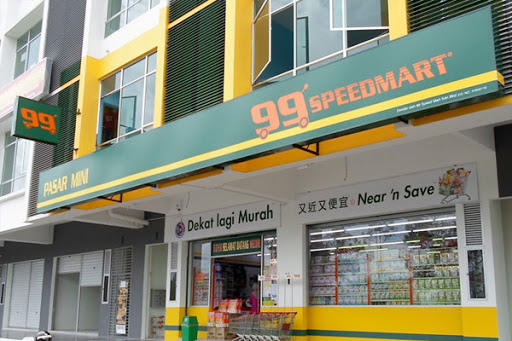
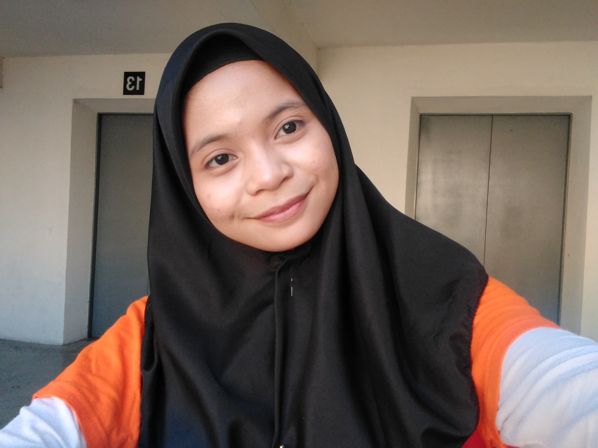
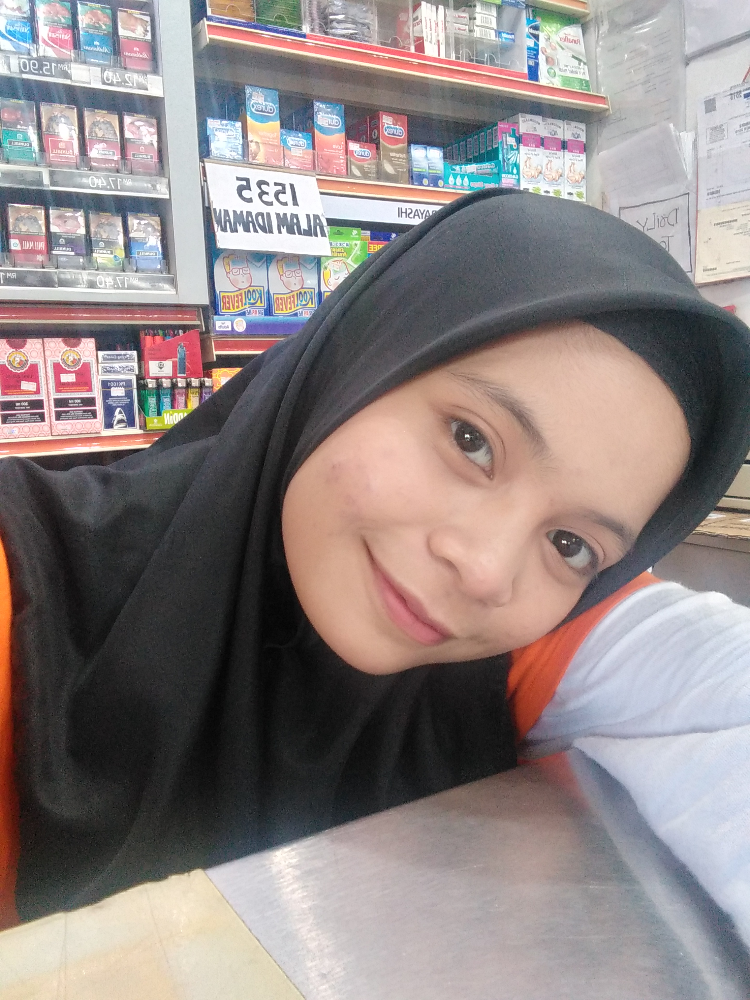

Hello and Assalamualaikum, here in my website, i would like to share my experience study at University Technology Mara (UITM). In July 2019, I received an offer for university. The course that I got was a bachelor's in office systems management. I am very happy. In semester 1, there are 9 subject that i took and i have to learn. I meet a new friends from another state such as Perlis, Kedah and others.After i finished semester 1 at January,17 , i started my semester 2, i took 8 subjects. in the semester, i took subjects of IMS456 (WEB DESIGN & CONTENT MANAGEMENT). This subject is very interesting and can increase my knowledge. Then, because of this subject I am good at making this kind of website. There are a lot of things I've learned and I really happy and enjoy. It is not as difficult as we think if we learn it well and understand it properly. The videos that was uploaded to youtube by my lecturer, Faizal Haini Fadzil are very helpful and easy to understand. Its is so great !!
In addition, i would like to share my exprience of online learning. As we know, our country has been plagued with the outbreak of the disease which are covid-19. So, as a student, it be my responsibilty to follow the instructions that have been released by goverment to stay at home and study online. All lectures and students must to follow the instructions and they are driven to study online together. Its hard because sometimes connection is lost and low, make me difficult to communicate with friends or lectures. Furthermore i prefer to study face to face because its easy to talk or see lectures and friends.
Lastly, My experience of work. I have worked at Speedmart 99 at Shah Alam on January 1, 2019 before i continue my studies at UITM. I work as a cashier at the shop. The supervisor is very kind. I work from 8:30 am to 10:30 pm. My salary is RM1400. I live in my sister's house at seksyen 22 , Shah Alam.My workplace is very close to home. it only takes 5 minutes.This grocery store is very cheap. Many people come to buy and sometimes customer had to line up to pay. Its really tired when many customers come but its great to see many people in the shop. I never forget this experience.
  